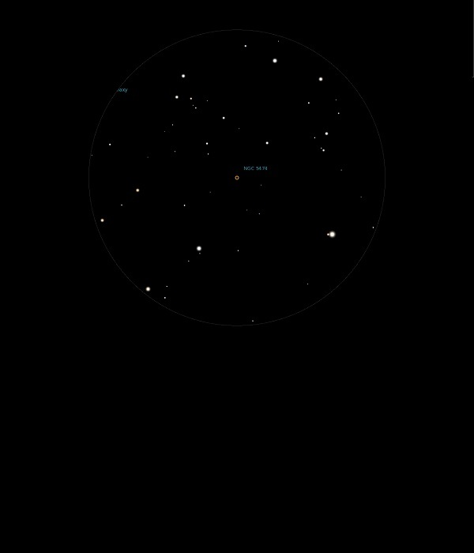

NGC 5474

Dwarf Galaxy in Ursa Major
NGC 5474
Mag 11.3
01/07/14
This Mag 11.3 Galaxy is just out of the same FOV in 12mm as M101
Little more than a very faint misty spot but nicely framed by Mag 9,10 and 11 stars